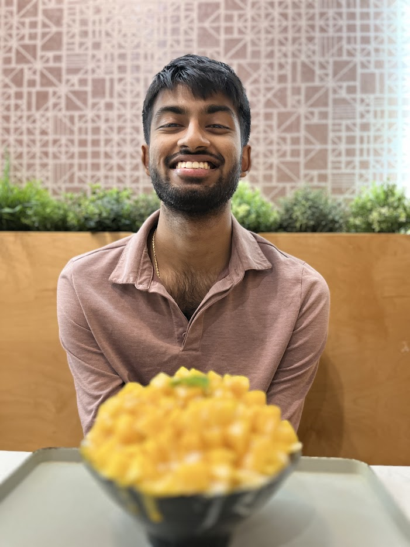

About

12/2023 - Dallas, TX
I am working to become an academic physician-scientist. The questions I find exciting are at the convergence of medicine and computation.
Hobbies
I spend my freetime pursuing these side passions:
- Physics Puzzles - I enjoy thinking through past physics Olympiads and abstract questions as seen in David Morin's textbooks.
- Poetry - I have long been fascinated with the rhythm, imagery, and inspired introspection that a poem can spark. Precision in language is a hard-earned skill; every so often, I try my hand at it, too:
- What if Pharrell Williams Decided to Write in Haiku? May 2023. pdf
- The Miner of Gold. May 2023. pdf
- Basketball - I hooped frequently from middle school through college. Now, I am generally content watching games with family and friends, offering the occasional color commentary.